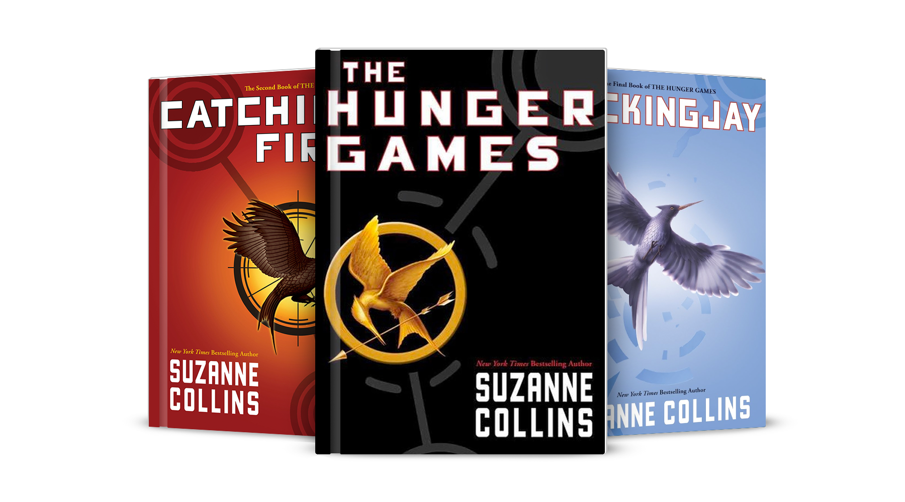
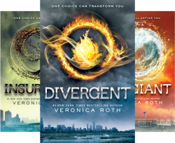
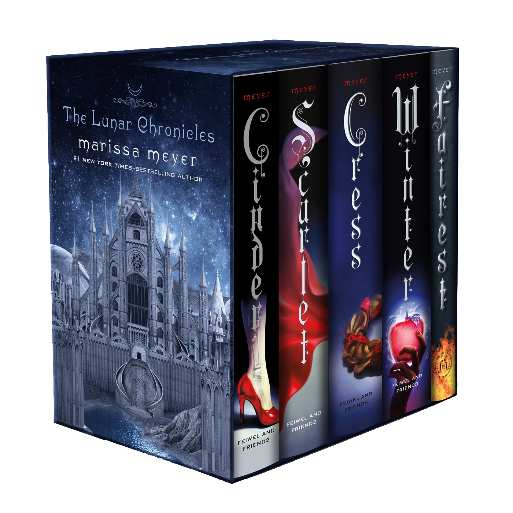

If you don't visit the library when given the choice, chances are you have yet to discover the right books for you.
Over the past few years, I have been introduced to the science fiction (sci-fi) genre, and reintroduced to the fantasy genre.
So, if:
Look no further. Below are a few that have been selected as the classics or fairly new series that are worthwhile.
Book Information |
Book Series |
| The Hunger Games Trilogy, Suzanne Collins Genre: science fiction/dystopia/young adult/adventure Publisher: Scholastic Press |
 The Hunger Games Trilogy by Suzanne Collins.
|
| Divergent Trilogy, Veronica Roth Genre: science fiction/dystopia/young adult/adventure Publisher: HarperCollins |
 Divergent Trilogy by Veronica Roth.
|
| The Lunar Chronicles, Marissa Meyer Genre: science fiction/dystopia/fantasy/young adult/adventure Publisher: Macmillan Publishers |
 The Lunar Chronicles by Marissa Meyer.
|
Hey, readers!
My name is Anika Nawar Yasmeen, and I am attending Victoria Park Collegiate Institute for my first year of high school as a student in the ninth grade.
If this website has not yet informed you, I am extremely passionate about reading, books in particular. As the saying goes, "Books are a door to another world"! And, believe me when I say that this is the truth! If you have not yet gotten into the habit of reading every once in a while, be it a book, a magazine, or even a newspaper article, I strongly encourage you to start. After all, "The more that you read, the more things you will know. The more you learn, the more places you'll go!" -Dr. Seuss
Here are my references.
Back to top